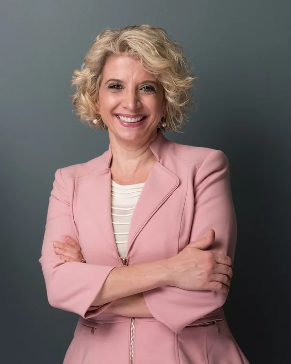
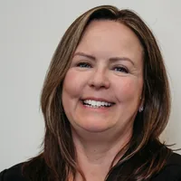
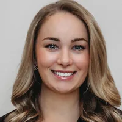
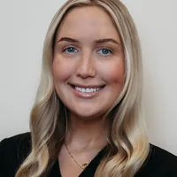
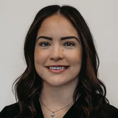

If diets have not held and you want medical help
Personalized Medical Weight Loss
Our physician-led program with a provider, a registered dietitian and follow-up visits. Medication is not required.
Learn about Personalized Medical Weight LossFayetteville, NY
Medical Weight Loss of New York is a physician-led practice founded byWe are a physician-led practice founded by Wendy Scinta, MD, MS, past president of the Obesity Medicine Association. If diets have not held and you want medical help, we start with a complete medical evaluation and a nutrition visit, then build your plan from your results, with medication only when it is appropriate for you. The practice also offers hormone therapy for women and men, peptide therapy and aesthetic care.
A free call with our team, up to 30 minutes: how the program works, your questions, and pricing. Nothing medical is decided on the call. Request a time online and we call you back, usually within one business day. Prefer to talk now? Call 315-445-0023.See how the program works
How it works here
Evaluation first, then a plan built from your results. This is non-surgical medical weight management: obesity is treated as a chronic medical condition, with nutrition, physical activity, behavior change and medication when appropriate.
Up to 30 minutes by phone with our team: how the program works, your questions, and exact pricing before anything is scheduled. Not a medical visit.
Testing and bloodwork with a nurse, then about 60 minutes with a provider who reviews your bloodwork, history and medications.
About 45 minutes with our registered dietitian to build your daily plan. Weekly group classes in person or on Zoom.
Built from your results. It may involve no medication, an oral medication, a GLP-1, or a combination.
Regular visits to adjust your plan, then a maintenance program once you reach your goal.
Weight loss isn't a mystery, it's a science.
Weight loss options
Four, and all of them start with the same evaluation: Personalized Medical Weight Loss, GLP-1 Medical Weight Loss, Prescription Weight-Loss Options and Weight Maintenance.
If diets have not held and you want medical help
Our physician-led program with a provider, a registered dietitian and follow-up visits. Medication is not required.
Learn about Personalized Medical Weight LossIf you are considering a GLP-1 medication
Labs and a physical first. If a GLP-1 is appropriate for you, an FDA-approved medication such as semaglutide (Wegovy) or tirzepatide (Zepbound), with nutrition, body-composition tracking and dose management.
Explore GLP-1 Medical Weight LossIf you want a non-injectable option
Phentermine and other oral medications, prescribed after screening as part of a full plan, not on their own.
Explore Oral Weight-Loss MedicationsIf you have reached your goal
Ongoing support and monitoring to help you keep the weight off, planned from the start of care.
See Weight Maintenance plansAlready taking a GLP-1 prescribed elsewhere? Your prescriber keeps prescribing; we add a provider review, body-composition tracking and a dietitian visit. See the GLP-1 Optimization Program ($199 introductory assessment, price as published in September 2026).
More than weight loss
Hormone therapy, menopause, testosterone, peptides, skin and care for children and teens, from the same team and with the same evaluation-first approach. Each program has its own page.
Medical care around it
A weight-loss medication is one part of a plan, never the whole plan. Here is what surrounds it at this practice. Hormone programs follow the same first rule: bloodwork before anything is prescribed, and follow-up labs after.
If you want medication without the evaluation, we are probably not the right practice for you. FDA-approved GLP-1 medications such as semaglutide (Wegovy) and tirzepatide (Zepbound) are effective when combined with a reduced-calorie diet and physical activity. We say plainly which products are FDA-approved and which are compounded.
Losing weight can improve blood pressure, cholesterol and blood sugar, and for some people type 2 diabetes goes into remission (DiRECT trial). Results vary and nothing here is a promise. Sources are linked where a figure appears on this page.
How our GLP-1 care differs from an online prescription
Who treats you
Dr. Scinta founded the practice and directs the medical care. She works alongside nurse practitioners and a registered dietitian.




Reviews and patient stories
Knowledgeable, professional, friendly. Always look forward to my appointments.
Always a great experience with Dr Scinta and staff
Everyone was very friendly and the Np was very helpful
From my very first appointment to my bi-weekly check-ins, the staff has been nothing but welcoming and encouraging.
The staff at the office are wonderful and always take the time to answer all of your questions and concerns.
Reviews and stories are the experiences of individual patients and are not a promise of results.
Losing 5 to 10 percent of body weight can improve blood pressure, cholesterol and blood sugar (CDC). In the STEP 1 and SURMOUNT-1 trials, average weight loss with semaglutide or tirzepatide was about 15 to 21 percent over 68 to 72 weeks. Results vary and depend on the plan you follow.
In the news
Sponsored press releases about the practice, distributed through HelloNation, have also appeared on Yahoo Finance and HelloNation.
Cost and what to expect
A free phone call, up to 30 minutes, with our team. We explain how the program works, answer your questions and review detailed pricing. It is not a medical visit and nothing medical is decided on it. Anyone you choose is welcome to join. There is no obligation after the call.
Cost depends on your plan. You get detailed pricing on the call, before anything is scheduled. Program pages publish their prices where the practice has set them.
We do not bill insurance (we are out-of-network). We give you a superbill, an itemized receipt you can send to your insurer to ask for reimbursement. We accept cash, check, all major credit cards, HSA and FSA cards, CareCredit and Cherry financing.
Request a call online and we call you back to set a time, usually within one business day. After the call, if you decide to go ahead, your first visit is the evaluation described above. Some later visits may be by telemedicine, which may be alternated with office visits.
Dr. Wendy Scinta and her team of nurse practitioners and a registered dietitian. Dr. Scinta founded the practice and directs the medical care. Meet the team.
Before you call
Cost depends on your plan; you get detailed pricing on the free Discovery Call. We do not bill insurance (we are out-of-network) and give you a superbill, an itemized receipt you can send to your insurer for reimbursement. See the Insurance and payment card above and our payment plans.
No. Your plan is built from your evaluation. It may involve no medication, an oral medication, a GLP-1, or a combination. Read about Personalized Medical Weight Loss and GLP-1 Medical Weight Loss.
A detailed two-part evaluation: bloodwork and testing with a nurse, about 60 minutes with a provider reviewing your bloodwork, medical history, medications and past experiences, and about 45 minutes with our dietitian to plan your daily routine. The Personalized Medical Weight Loss page walks through it.
Your first visits are the longest: testing and bloodwork with a nurse, about 60 minutes with a provider and about 45 minutes with our dietitian. After that, regular follow-up visits; follow-up is typically closer during periods of active medication adjustment. We are open until 7 PM on Tuesday and Thursday and from 7 AM on Friday, and some visits may be by telemedicine.
Dr. Wendy Scinta and her team of nurse practitioners and a registered dietitian. Dr. Scinta founded the practice and directs the medical care. Meet Dr. Wendy Scinta and the team.
Yes. BOUNCE is our program for ages 5 to 18, written for parents. No referral is needed and a parent attends every visit. Learn about BOUNCE.
Often, yes. We can review recent bloodwork you have had done and we accept recent EKGs. Bring copies to your first visit.
For some visits, yes. They may need to be alternated with office visits, depending on your program and your provider's input.
Medical Weight Loss of New York is at 6800 E Genesee St, Suite 1501, Fayetteville, NY 13066, east of Syracuse, minutes from I-481. Patients come from across Central New York and Upstate New York. Hours and directions.
Medical weight loss treats obesity as a chronic medical condition, led by a physician, in four areas: nutrition, physical activity, behavior change and medication when appropriate. Losing weight can improve weight-related conditions such as high blood pressure, high cholesterol and type 2 diabetes.
Appointment changes or cancellations must be made 24 hours in advance. A $75 fee is charged for missed appointments or changes made with less than 24 hours' notice.
Location and contact
Accepting new patients. Serving Syracuse and Central New York.
Current patients: call 315-445-0023 or sign in to the patient portal.
About the practice
Medical Weight Loss of New York is a physician-led medical weight loss practice at 6800 E Genesee St, Suite 1501, Fayetteville, NY 13066, east of Syracuse, serving Central New York. It was founded by Wendy Scinta, MD, MS, past president of the Obesity Medicine Association, who directs the medical care with nurse practitioners and a registered dietitian. Care starts with a medical evaluation and a nutrition visit; medication is prescribed only when it is appropriate. The practice also offers menopause treatment, testosterone therapy for men, hormone therapy (BHRT), peptide therapy, Jet Plasma skin rejuvenation and BOUNCE for children and teens ages 5 to 18. Weight loss and hormone programs start with a free Discovery Call by phone, up to 30 minutes; peptide therapy and Jet Plasma start with a consultation visit. Call 315-445-0023 or book a free Discovery Call.
Ready to talk it through?
Up to 30 minutes by phone with our team. How the program works, your questions, and pricing, before anything is scheduled. No obligation.